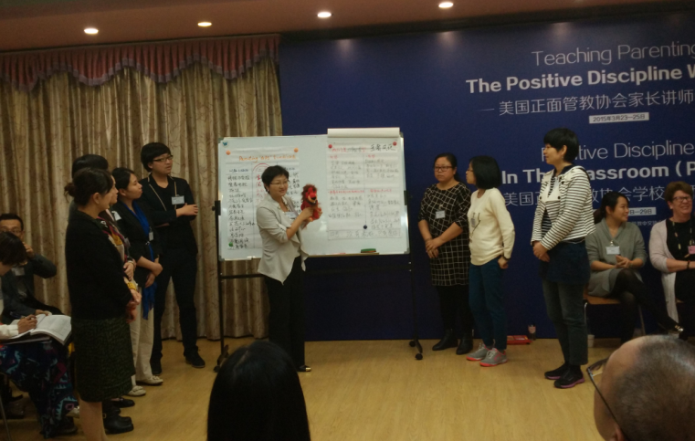

返回主页
Vivian：注册正面管教家长讲师

Vivian（拉丁语：充满活力；梵语：我爱你）
Vivian的微信号：PD2014Vivian
Vivian微信昵称：快乐PD妈
在微信（Wechat）中用手机号（15013091702）也能找到PD2014Vivian
专业背景：
1）顶级HR专业资格：PI Analyzer Certification,2006
2）留学美国硅谷：DDI Administrator, 1 of 5 in Flextronics Global,2007
3）儿童教育资格：Certified Positive Discipline Parent Educator (CPDPE) “注册正面管教家长讲师”, 2015
4）HR职业荣誉：2013 DBP Global No. 1（DBP全球项目比赛）�C Buddy Plan Program, Project Mgr
5）HR职业荣誉：2013 AmCham China(中国美国商会)- Best Organization Development Awards
What is Positive Discipline?
私立中学的课程
美国的义务教育
version:1.0; jobnet@188.com © retter2012.com